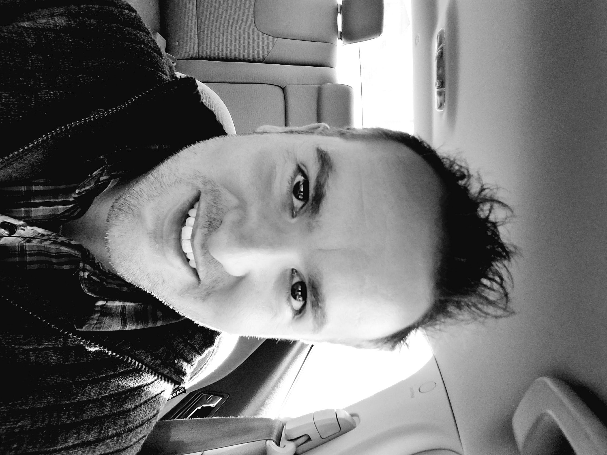

About Me

I'm a full-stack web developer, with a passion for gaming, making cool apps, and learning languages (both human and computer). I speak English, Portuguese, Spanish, and Italian; studied some of Danish, French, German, Navajo, Japanese, and Mandarin; and a little
Some of my favorite things are: The Legend of Zelda, Star Wars, Halo, hunting, fishing, hiking, camping,
Some of my not-so-favorite things are peas, doing dishes, poopy diapers, laundry, pig ears (as food), and skunk roadkill. Also lentils and liver. Or chicken feet. Yuck.